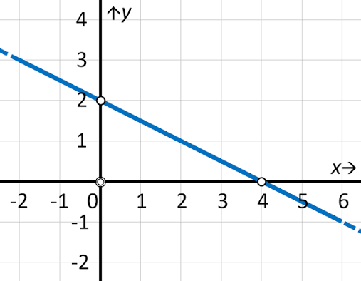
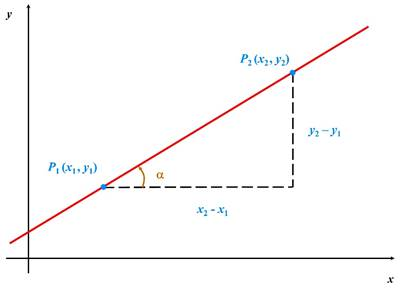
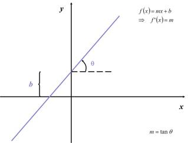
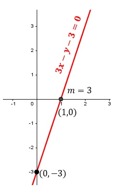
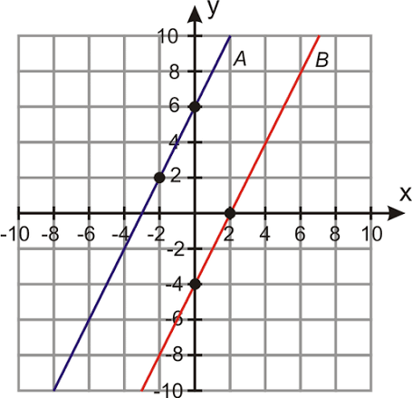
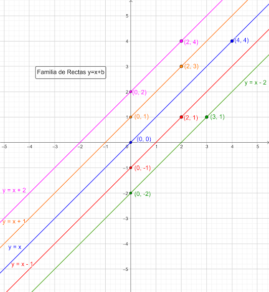
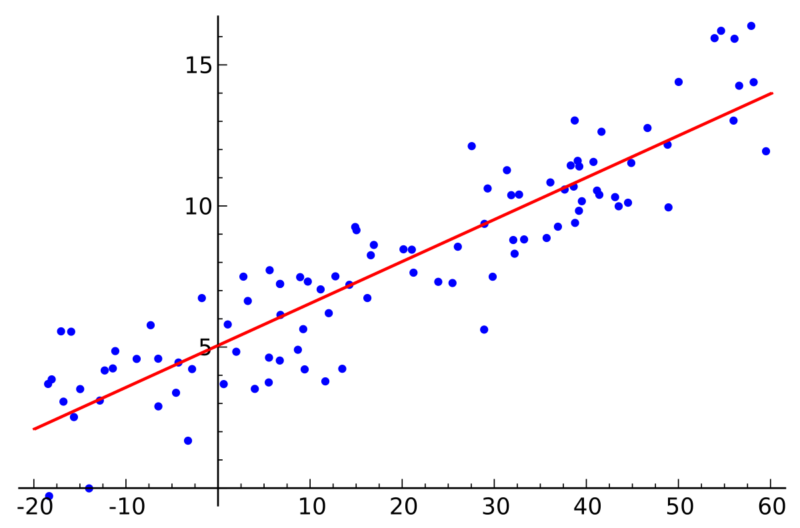

La recta
- Recta
- Linea formada por infinitos puntos que se extiende en ambas direcciones sin principio ni fin. Ejemplo: el borde recto de una regla.

- Pendiente
- Indica que tan inclinada esta una recta y si sube o baja. Formula: m = (y2 - y1) / (x2 - x1).

- Ordenada al origen
- Punto donde la recta cruza el eje Y. En la ecuacion y = mx + b, la b representa la ordenada al origen.

- Ecuacion general
- Representa una recta mediante Ax + By + C = 0, donde A, B y C son constantes y A y B no pueden ser ambos cero.

- Grafica de rectas
- Representacion de una recta en el plano cartesiano, formada por puntos que siguen una misma direccion. Ejemplo: trayectoria de un automovil en una carretera recta.

- Familia de rectas
- Conjunto de rectas que comparten una caracteristica, como pasar por un mismo punto o tener la misma pendiente.

- Regresion lineal
- Metodo que permite encontrar una recta que representa la relacion entre dos variables y ayuda a hacer predicciones. Ejemplo: estimar cuanto gastara una persona segun la cantidad de productos que compra.

Regresar al inicio